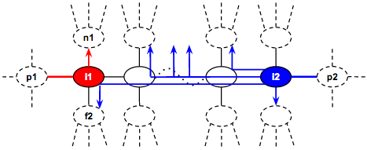

Code Jam 2014 - Round 3
Analysis: Willow
The problem can be paraphrased as follows: we are given a tree with N vertices where each vertex i has Ci coins. There are two players taking turns in the game. First, each player picks a starting vertex (could be the same vertex), then player 1 makes the first move. In a move, the player picks a new neighboring vertex adjacent to the last picked vertex, forming a simple path. The path of one player is allowed to intersect with at most one vertex (i.e., no edges overlap) with the path of the other player. The game ends when neither player can make a move. The score for the player is the sum of all coins in the vertices picked by the player subtracted by the sum of all coins in the vertices picked by the other player. Our task is to find the maximum score player 1 can get.
There are N possible starting vertices for player 1. After player 1 picks a starting vertex, player 2 also has N possible starting vertices. Both players will pick a starting vertex that maximizes their score. The high level solution for finding the maximum score for player 1 is shown in the pseudocode below:
p1_max_score = -INFINITE
for p1_start_vertex in 1 .. N:
min_score = INFINITE
for p2_start_vertex in 1 .. N:
p1_score = minimax(p1_start_vertex, p2_start_vertex)
min_score = min(min_score, p1_score)
p1_max_score = max(p1_max_score, min_score)
print p1_max_score
Player 1 tries to pick the starting vertex that maximizes the p1_max_score while player 2 tries to pick the starting vertex that minimizes player 1’s score. The function minimax is the main algorithm to maximize the score for the first player, given the starting vertex of each player.
In the next two sections, we will present two minimax algorithms. The first minimax algorithm is based on a depth-first search simulation which runs in O(N^2), thus giving the overall complexity of O(N^4). The other minimax algorithm is based on dynamic programming which can be precomputed in O(N^2) and gives answers in O(1), thus giving the overall complexity of O(N^2 + N^2) = O(N^2).
Minimax using simulation O(N^2)
Given the starting vertex for each player, we can do a depth-first search (DFS) simulation for the minimax algorithm. The DFS state is the last vertices picked by each player and the player currently making the turn. The current player that makes the turn first grabs the coins at the current vertex and then tries to pick a neighboring vertex to visit that maximizes the total coins. Before visiting the neighboring vertex, the (bi-directional) edge connected to the new vertex is removed and later restored when the DFS backtracks. Finally, if the current player cannot make a move, then the player gives the turn to the other player to continue to make a move. The pseudocode below shows the sketch of the algorithm.
function rec(i, j, turn) # See note 1
if visited[i][j][turn] return 0 # See note 2
visited[i][j][turn] = true
ci = C[i] # See note 3
C[i] = 0 # Remove the coins at vertex i
ret = -INF
for each neighbor ni of i
remove edge[i][ni] # See note 4
ret = max(ret, -rec(j, ni, 1 - turn))
restore edge[i][ni]
if ret == -INF
ret = -rec(j, i, 1 - turn) # See note 5
C[i] = ci # Restore the coins at vertex i
return ret + ci
Notes:
- The first parameter i of the rec function is the last vertex picked by the current player that is currently making the turn. The second parameter j is the last vertex picked by the other player. The third parameter turn is the player ID that is making the turn (0 is the first player and 1 is the second player)
- The state (i, j, turn) is visited exactly once. The next visit to this vertex returns 0 which signifies a terminal condition.
- We temporarily store the coins at the vertex of the current player. Then we remove coins from the vertex i (so that further moves in the DFS cannot reuse the coins again), and later restore the coins before returning.
- Removing the connecting edge before visiting (recursing) the next vertex ensures that the edge will not be used any further by any of the players later in the DFS. Notice that the edge is restored later when the recursion backtracks. The same is true for the coins.
- If the current player cannot move, it must give the turn to the other player.
Given the starting vertex of both players, the DFS simulation above runs in O(N^2) to compute the maximum score for the first player. This comes from the number of distinct states in the parameters (N^2) and the fact that we never process the same state twice. The inner loop which loops through the neighbors of i can be amortized to O(1) since on average each vertex has 1 outgoing edge.
Unfortunately, for different starting vertices, we cannot reuse the computation (i.e., we need to clear the visited states and start from scratch). Therefore the overall runtime complexity is O(N^4) which is only good for the small input N = 80.
Minimax with Dynamic Programming O(1)
The idea behind the O(1) runtime complexity is to be able to reuse the computation when computing for different starting vertices for each player. The DFS state described in the previous section is not independent from another DFS state because it has to keep track of the coins that have already been taken and also the edges that cannot be used anymore. Different DFS states have different sets of coins and edges that are available. If we can design a state where it does not need to care about which coins or edges are available, then we can make each state independent and we can memoize (cache) the state results and reuse it to compute other states. This way, each state can be computed in O(1).
To design a state that is independent of each other, we need to make an important observation: after a player makes a move, the edge connecting the last vertex to the new vertex is removed. If the new vertex is now unreachable from the other player’s last vertex then the two vertices are disconnected and each vertex is in its own tree, then the solution becomes trivial: each player simply takes the best path that remains open (the best path is the path that gives the maximum total coins) in its own tree. We therefore only need to perform minimax across states where the last vertices for both players are still in the same tree.
In our new minimax algorithm, the state space can be entirely described by the last edge traversed by each player (which is only O(N^2) pair of edges). There are two choices for the current player to move (i.e., to pick the new neighboring vertex):
-
Pick the vertex towards the other player’s last vertex. Note that the input graph is a tree, therefore, there is exactly one unique path connecting the last vertices of both player. The player picks the next vertex in this path that brings them closer together. This move will transition (recurse) to a new state where the other player is now the one taking the turn. The new state is independent from the previous state since we do not need to care about which coins or edges have been removed (i.e., the current player cannot go back to the previous vertex and the other player cannot reach the vertices behind the current player anyway). The vertex that leads to the other player’s last vertex can be found in O(1) by precomputing it beforehand. The precomputation uses dynamic programming where the states are the last edge used by the current player, and the last vertex of the other player. The transition for the current player is to move closer to the last vertex of the other player which can be done in O(1) since each vertex has 1 edge on average (please refer to the sample implementation below for the details of how the next_node_to is pre-calculated). Now, let’s see an example for the first choice we have just described:

Player 1 is the current player that is making the move and is at vertex i1 and the last edge used is the connecting edge to vertex p1. Player 2 is at vertex i2 and the last edge used is the connecting edge to vertex p2. The current player 1 makes a move by picking the vertex n1 that leads to i2 (there is exactly one path that leads to i2). After player 1 makes a move, we can recurse to a new independent state where the current player is player 2 at i2 with the same last edge and the other player is player 1 at n1 with the last edge being the connecting edge to i1.
-
Pick the next best vertex that does not lead to the other player’s last vertex. We can pick the vertex in O(1) if we precompute the list of next best vertex beforehand. This move will disconnect the current player’s newly picked vertex from the other player’s last vertex and their maximum total coins can now be processed independently in O(1) as explained in the example below. The other player can then independently pick the best path that avoids the edges used by the current player in O(1). We demonstrate it with the following example:

Just like before, player 1 is the current player that is making the move and is at vertex i1 with the last edge connecting to vertex p1. The other player is player 2 at vertex i2 with the last edge connecting to vertex p2. The current player 1 picks the new vertex n1 which is the vertex leading to the best path that is disconnected with the other player’s last vertex i2. At this point, both players become independent. Player 2 is free to pick the best path that avoids the two edges used by player 1 (marked as red edges). Player 2 can try moving in the direction to i1 and then “branch-off” at any time to another direction to find its best path. The special case is when it has reached i1, it cannot branch-off in the direction of p1 nor n1 since those edges are already used. Player 2 can only branch-off to vertex f2 from vertex i1. This means that it is sufficient to keep the best 3 outgoing edges for each vertex because when we branch-off, we only consider the next best path to branch-off and the 3rd best path is used only in the special case. We can pre-compute the maximum total coins gained via branching-off in between i2 to i1 (both inclusive) using dynamic programming in O(N^2) (please refer to the branch_off_between method and its comments in the sample implementation below). Thus, to answer the maximum coins that player 2 can get in this case can be answered in O(1).
The two cases above can be answered in O(1), therefore each state can be computed in O(1) and the result can be cached and reused to compute other states (i.e., it does not need to be re-set for different starting vertices). Since there are O(N^2) possible last edges for each player, there are only O(N^2) distinct states. Therefore, given any two starting vertices for each player, the new minimax algorithm can answer the maximum score for player 1 in O(1).
Below is the sample implementation in C++11.
#include <algorithm>
#include <cstdio>
#include <cstring>
#include <vector>
using namespace std;
#define MAXN 4001
#define MAXE (MAXN * 3)
vector<int> con[MAXN];
int T, N, C[MAXN], id;
int edge_id[MAXN][MAXN];
int next_node_to[MAXN][MAXN];
int best_coins[MAXE];
int best_nodes[MAXE][3];
int memo_rec[MAXE][MAXE];
int memo_branch_off[MAXE][MAXE];
// Pre-calculate the next_node_to, best_coins, best_nodes.
void precalc(int i, int pi, int from, int first_node) {
next_node_to[from][i] = first_node;
int &best = best_coins[edge_id[i][pi]];
best = 0;
vector<pair<int, int> > arr;
for (int ni : con[i]) if (ni != pi) {
precalc(ni, i, from, first_node);
int coins = best_coins[edge_id[ni][i]];
arr.push_back(make_pair(coins, ni));
best = max(best, coins);
}
sort(arr.rbegin(), arr.rend());
for (int j = 0; j < arr.size() && j < 3; j++)
best_nodes[edge_id[i][pi]][j] = arr[j].second;
best += C[i];
}
// Returns the best next vertex when coming from
// edge (pi -> i), excluding vertex v1 and v2.
int next_best_except(int i, int pi, int v1, int v2 = -1) {
int ei = edge_id[i][pi];
int j = 0, *arr = best_nodes[ei];
if (arr[j] == v1 || arr[j] == v2) j++;
if (arr[j] == v1 || arr[j] == v2) j++;
return arr[j];
}
// Maximum coins for sub-tree i with parent pi.
int max_coins(int i, int pi) {
return (i < 0) ? 0 : best_coins[edge_id[i][pi]];
}
// Maximum coins for branching off at any vertex in [i, j].
int branch_off_between(int i, int pi, int j, int pj) {
int ei = edge_id[i][pi];
int ej = edge_id[j][pj];
int &ret = memo_branch_off[ei][ej];
if (ret != -1) return ret;
if (i == j) {
int ni = next_best_except(i, pi, pj);
int nj = next_best_except(i, pi, pj, ni);
// The other player takes the third best vertex nj since
// the best two are already taken by the current player.
return ret = max_coins(nj, j);
}
int nj = next_node_to[j][i];
int njb = next_best_except(j, pj, nj);
int branch_off_now = max_coins(njb, j);
int branch_off_later = ((nj == i) ? 0 : C[nj])
+ branch_off_between(i, pi, nj, j);
return ret = max(branch_off_now, branch_off_later);
}
// Minimax for the current player with last edge (pi -> i)
// and the other player with last edge (pj -> j).
int rec(int i, int pi, int j, int pj) {
int ei = edge_id[i][pi];
int ej = edge_id[j][pj];
int &ret = memo_rec[ei][ej];
if (ret != -1) return ret;
if (i == j) {
// The current player pick the next best path.
int ni = next_best_except(i, pi, pj);
// The other player pick the next next best path.
int nj = next_best_except(i, pi, pj, ni);
return ret = max_coins(ni, i) - max_coins(nj, j);
}
// The first option for the current player:
// The current player pick the vertex ni
// that leads to other player last vertex.
int ni = next_node_to[i][j];
int option1 = ((ni == j) ? 0 : C[ni]) - rec(j, pj, ni, i);
// The second option for the current player:
// The current player go to the best path other than ni.
ni = next_best_except(i, pi, ni);
int p1coins = max_coins(ni, i);
// The other player branch off at any point
// between vertex i and j (inclusive).
int p2coins = branch_off_between(i, pi, j, pj);
int option2 = p1coins - p2coins;
// Pick the best outcome for the current player.
return ret = max(option1, option2);
}
int main() {
scanf("%d", &T);
for (int TC = 1; TC <= T; TC++) {
scanf("%d", &N);
for (int i = 0; i < N; i++) {
scanf("%d", &C[i]);
con[i].clear();
}
id = 0;
memset(edge_id, -1, sizeof(edge_id));
for (int i = 0, j; i < N - 1; i++) {
scanf("%d", &j); j--;
con[i].push_back(j);
con[j].push_back(i);
edge_id[i][j] = id++;
edge_id[j][i] = id++;
}
for (int i = 0; i < N; i++) {
edge_id[i][N] = id++;
}
// These memoizations are reset per test case.
memset(best_coins, -1, sizeof(best_coins));
memset(best_nodes, -1, sizeof(best_nodes));
memset(next_node_to, -1, sizeof(next_node_to));
memset(memo_rec, -1, sizeof(memo_rec));
memset(memo_branch_off, -1, sizeof(memo_branch_off));
// Pre-calculation.
for (int i = 0; i < N; i++) {
precalc(i, N, i, N);
for (int j : con[i]) precalc(j, i, i, j);
}
int max_diff = -1000000000;
for (int i = 0; i < N; i++) {
int min_diff = 1000000000;
for (int j = 0; j < N; j++) {
int cost = C[i] - (i == j ? 0 : C[j]);
min_diff = min(min_diff, cost + rec(i, N, j, N));
}
max_diff = max(max_diff, min_diff);
}
printf("Case #%d: %d\n", TC, max_diff);
}
}